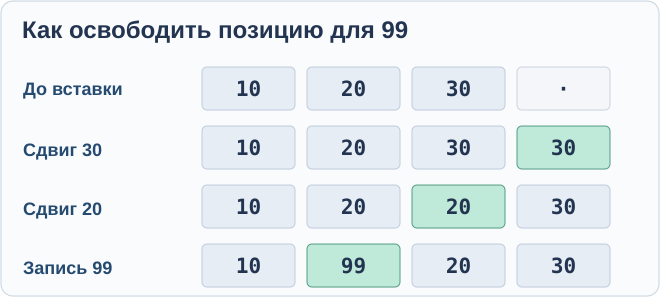

Преобразование и редактирование последовательностей
Пусть в векторе стоят числа 10, 20, 30. Чтобы поместить 99 между первым и вторым числами, нужно указать позицию перед 20. В C++ эту позицию задаёт итератор values.begin() + 1.
Вставка и удаление по позиции
Пусть values — вектор, а position обозначает позицию в нём.
| Запись | Результат |
|---|---|
values.push_back(value) |
Дописывает значение в конец |
values.insert(position, value) |
Вставляет значение перед позицией position |
values.insert(position, count, value) |
Вставляет count копий |
values.insert(position, extra_values.begin(), extra_values.end()) |
Вставляет все элементы другого вектора extra_values |
values.erase(position) |
Удаляет элемент в позиции position |
values.erase(first, last) |
Удаляет полуинтервал [first, last) |
Вставка перед end() дописывает в конец. Сам end() нельзя удалить как элемент. Посмотрим, как меняются позиции при двух правках подряд.
#include <vector>
using std::vector;
vector<int> values{10, 20, 30};
values.insert(values.begin() + 1, 99); // 10, 99, 20, 30
values.erase(values.begin() + 1, values.begin() + 3); // 10, 30
При удалении левая граница указывает на 99, правая — на 30. Элемент на правой границе сохраняется.
Почему вставка в середину требует работы. Представим, что в буфере вектора есть место для четвёртого числа. На рисунке точка обозначает запас места за последним элементом. Чтобы освободить вторую позицию, достаточно сдвинуть хвост на одну позицию вправо, начиная с конца. Если первым переписать 30 числом 20, прежнее значение 30 будет потеряно.

Сколько чисел придётся сдвинуть?
В буфере вектора есть место ещё для одного элемента. Выбери позицию вставки и перемести хвост по одной ячейке. Сравни вставку в начало и в конец.
На уровне памяти это перенос содержимого соседних ячеек. Для простых типов библиотека может перемещать сразу блок байтов. Если свободной позиции за концом нет, вектор получает более вместительный буфер и размещает элементы уже в нём. Как размещаются данные.
При вставке в середину и удалении могут сдвигаться многие элементы. Если вектор перераспределил память, старые итераторы и ссылки на его элементы недействительны. При вставке без перераспределения сохраняются итераторы и ссылки на элементы перед точкой вставки. При erase становятся недействительными итераторы и ссылки на удалённые и последующие позиции. Для учебных примеров безопасное правило простое: после изменения вектора вычисляй позиции заново.
В цикле, который удаляет по итератору, продолжай с результата it = values.erase(it), если ты удалил элемент, и делай ++it только в ветке, где его сохранил. Для удаления многих элементов по условию эффективнее сделать один проход с remove_if.
Копирование и преобразование
std::copy копирует исходный диапазон. std::transform вызывает функцию для каждого элемента и записывает результат. Алгоритмы сами не знают размер вектора назначения. Вызов std::back_inserter(result) из <iterator> создаёт итератор, запись в который вызывает result.push_back(...).
copy(..., result.begin())требует, чтобы вresultуже было достаточно элементов для записи.copy(..., std::back_inserter(result))дописывает в существующий вектор.transform(..., std::back_inserter(result), f)дописывает преобразованные значения.- Конструктор
std::vector<int> part(values.begin(), values.begin() + 2);сразу создаёт копию первых двух элементов, если они есть.
Если вызвать copy с back_inserter, а затем transform с тем же выходным вектором, преобразованные значения добавятся после уже скопированных.
Как удалить соседние повторы
std::unique оставляет по одному элементу от каждой соседней группы равных. Для {4, 4, 2, 4} полезная часть станет {4, 2, 4}. Длина вектора остаётся прежней. Алгоритм возвращает новый конец полезной части. Поэтому обычно пишут:
#include <algorithm>
using std::unique;
values.erase(unique(values.begin(), values.end()), values.end());
Если нужны все разные числа и изменение порядка допустимо, сначала отсортируй вектор: тогда равные числа окажутся рядом.
Как удалить элементы по условию
С remove_if похожий принцип. Алгоритм сдвигает вперёд элементы, которые надо сохранить, а хвост удаляет сам вектор:
#include <algorithm>
using std::remove_if;
auto new_end = remove_if(values.begin(), values.end(),
[](int value) { return value < 0; });
values.erase(new_end, values.end());
Чтобы убрать точное значение x, в таком же шаблоне используй std::remove(values.begin(), values.end(), x). Начиная с C++20, для вектора можно написать std::erase(values, x) или std::erase_if(values, pred). Это свободные функции, а values.erase(position) — метод вектора. Для решения под C++17 используй два предыдущих шаблона.
Как сложить элементы
std::accumulate(first, last, initial) из <numeric> последовательно прибавляет элементы к начальному значению. Тип начального значения задаёт тип суммы. Для суммы больших int пиши 0LL, если сумма помещается в long long. Запись long long sum = std::accumulate(..., 0); сначала считает в int, и позднее преобразование не защищает от переполнения.
Преобразование измерений и сумма
Оставим одно число из каждой соседней группы и удалим отрицательные числа. Потом сохраним очищенный ряд и допишем квадраты в тот же выходной вектор.
#include <algorithm>
#include <iostream>
#include <iterator>
#include <numeric>
#include <vector>
using std::accumulate;
using std::back_inserter;
using std::copy;
using std::cout;
using std::remove_if;
using std::transform;
using std::unique;
using std::vector;
int main() {
vector<int> values{2, 2, -5, 3, 3, 2};
values.erase(unique(values.begin(), values.end()), values.end());
values.erase(remove_if(values.begin(), values.end(),
[](int value) { return value < 0; }),
values.end());
vector<long long> result;
copy(values.begin(), values.end(), back_inserter(result));
transform(values.begin(), values.end(), back_inserter(result),
[](int value) { return 1LL * value * value; });
for (long long value : result) {
cout << value << ' ';
}
cout << '\n' << accumulate(result.begin(), result.end(), 0LL) << '\n';
}
| Шаг | Что получилось |
|---|---|
| Сжали соседние повторы | 2, -5, 3, 2 |
| Убрали отрицательные числа | 2, 3, 2 |
Скопировали числа в result и дописали их квадраты |
2, 3, 2, 4, 9, 4 |
Сложили все элементы result |
24 |
Порядок действий имеет значение. После удаления отрицательных элементов соседними могут стать числа, которые раньше разделял удалённый элемент. Если нужно схлопнуть и такие новые группы, вызывай unique после фильтрации.
← Алгоритмы стандартной библиотеки и лямбды · → Биты, маски и std::bitset